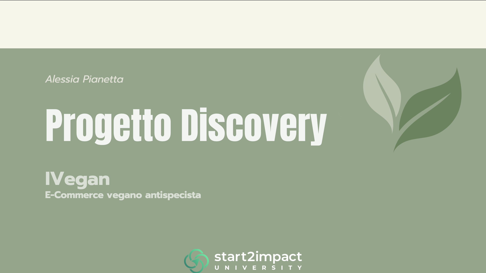
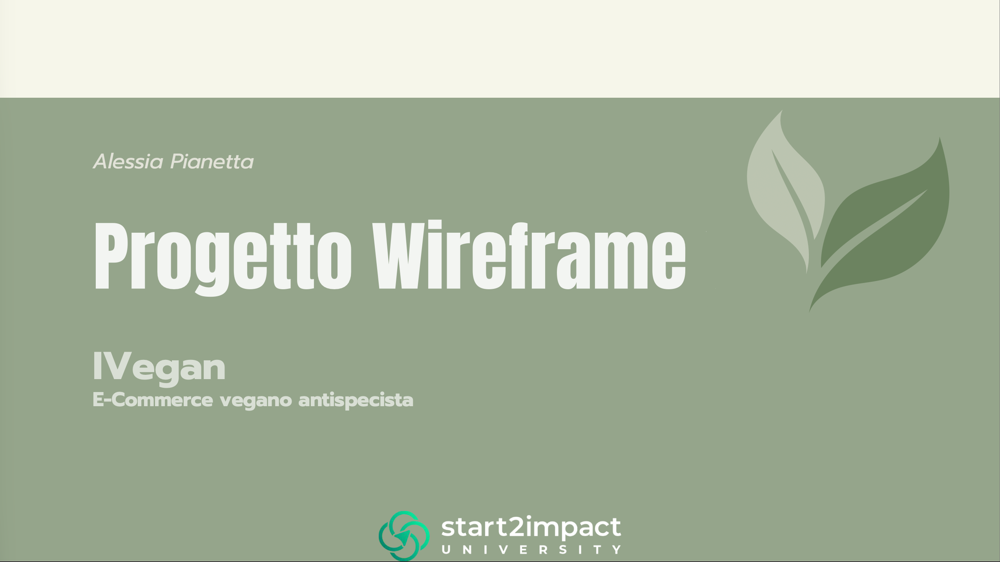
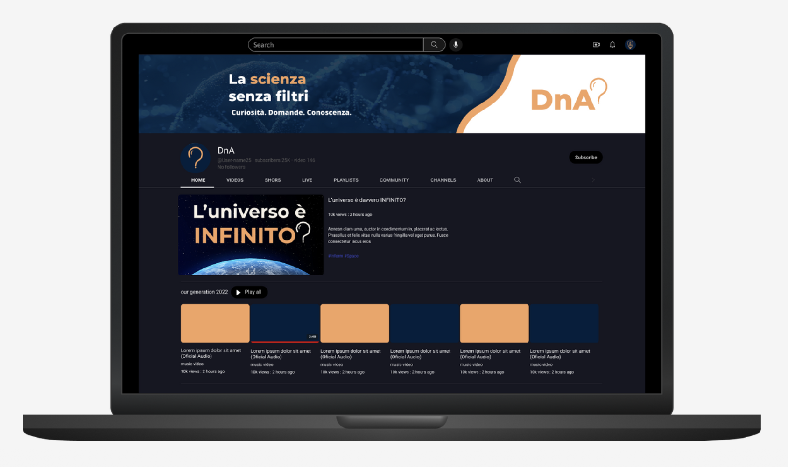
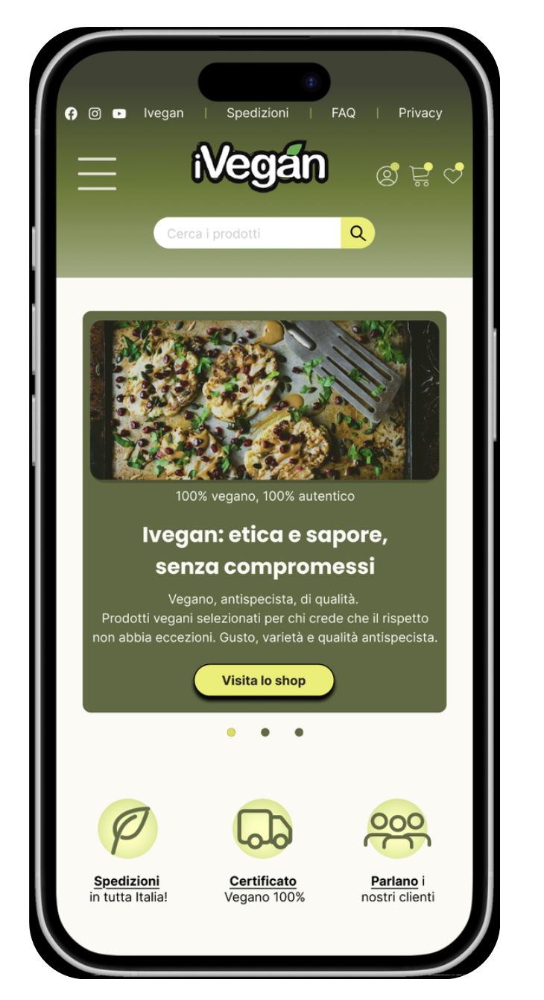

Hi! I’m Alessia Pianetta
Junior UX/UI Designer, former teacher. I listen before I design. Solutions only come from understanding.
About me
Curiosity has always been my engine, long before this was my job. I can’t stand unnecessary complications. Life’s messy enough. What I value most, though, is staying unattached to my own ideas.
I don’t come in with answers. I come in with questions. I observe how people interact, where they hesitate and what feels natural. My goal is to design experiences that make complexity disappear.
My main skills
User Research
Problem Framing
Interaction Design
User Testing
Iterative Design
Concept Development
My Projects

Discovery & UX Audit
Researched users, competitors and usability issues to identify opportunities for improving the iVegan experience.
View case study →
iVegan Wireframing
Developed wireframes to define the website structure, user flows and key interface interactions.
View project →
Scientific Magazine Brand Identity
Designed the complete visual identity of a scientific magazine, including logo, colour palette and brand system.
View project →
iVegan UI Redesign
Redesigned the visual interface to improve usability, hierarchy and the overall user experience.
View project →Have a project in mind?
Let’s cut the noise and build what works.
Contact me